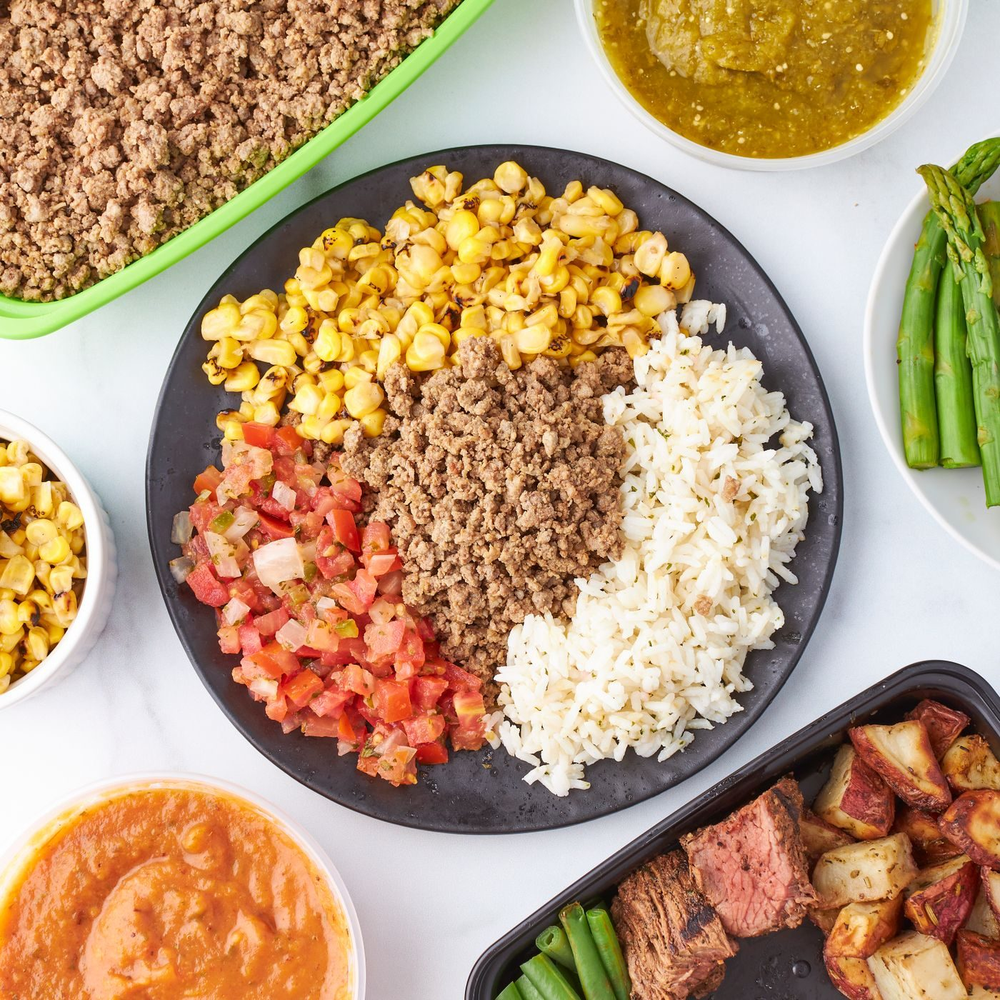
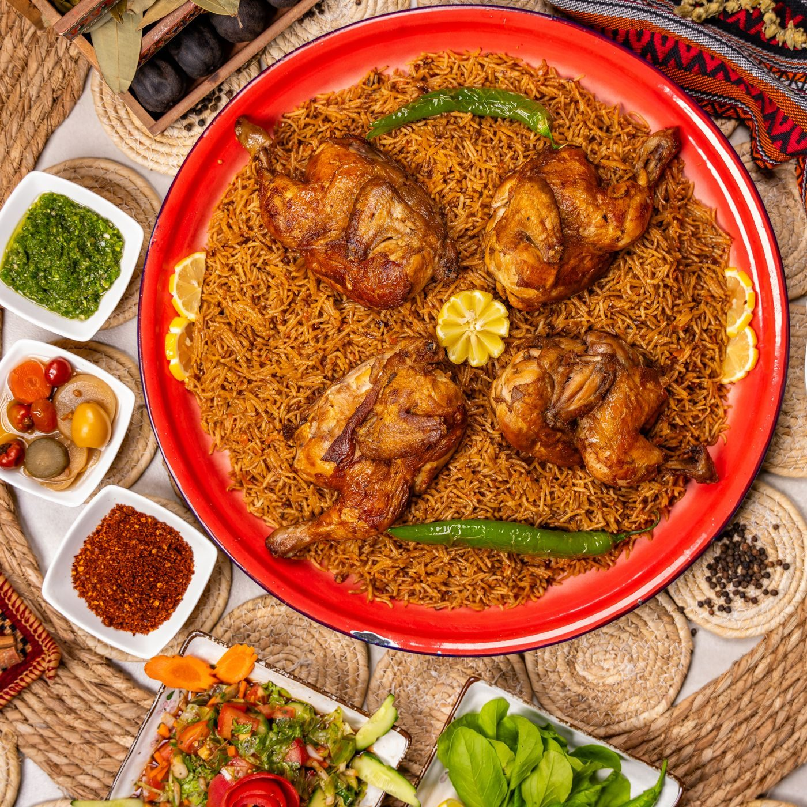
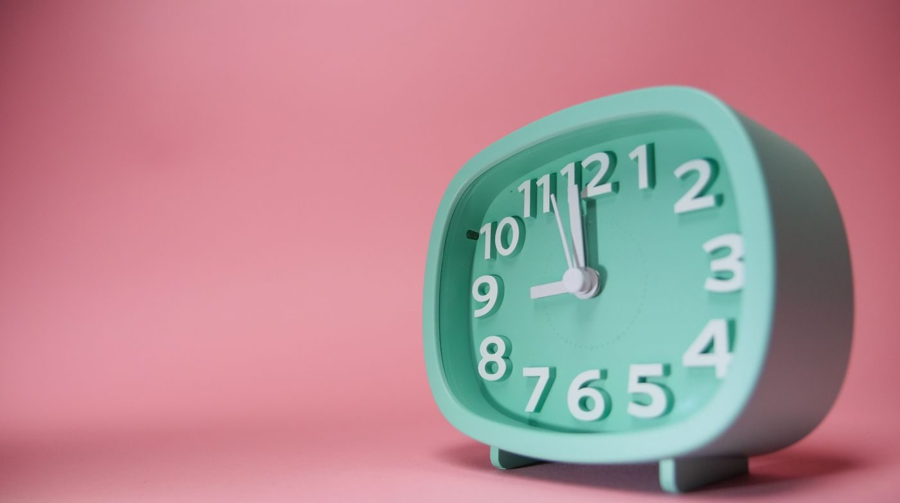
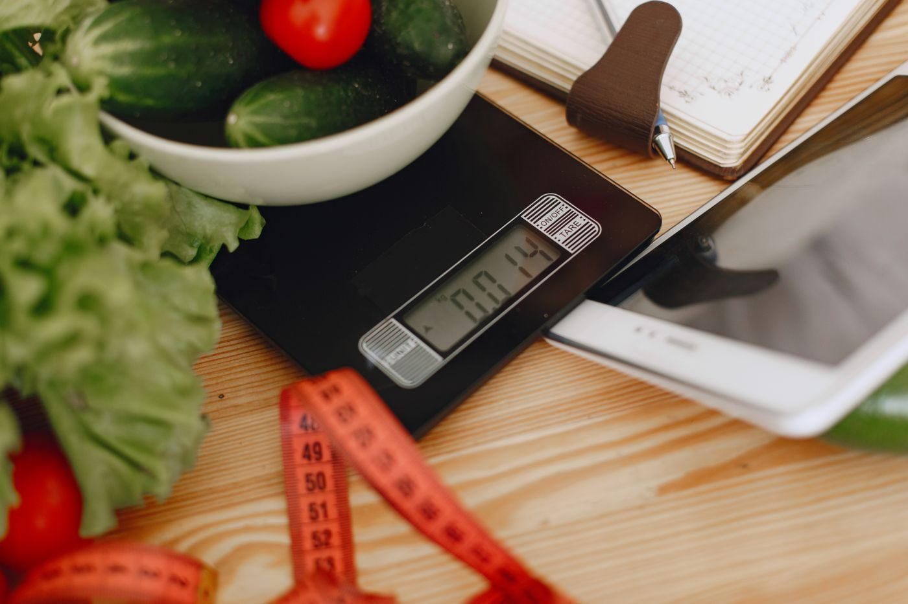
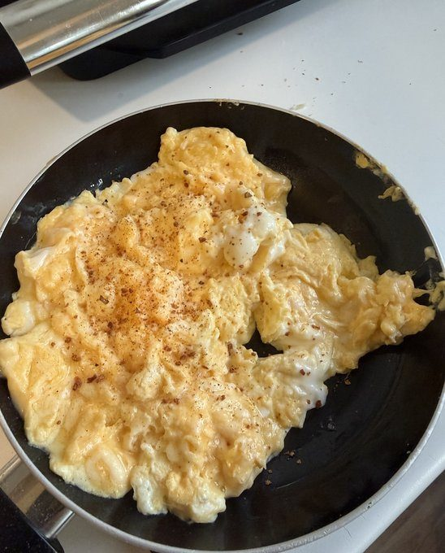
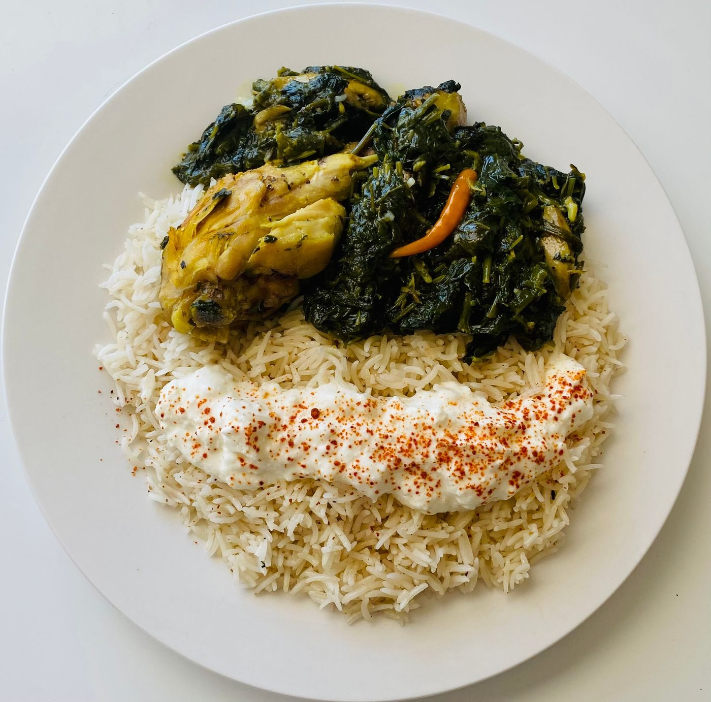
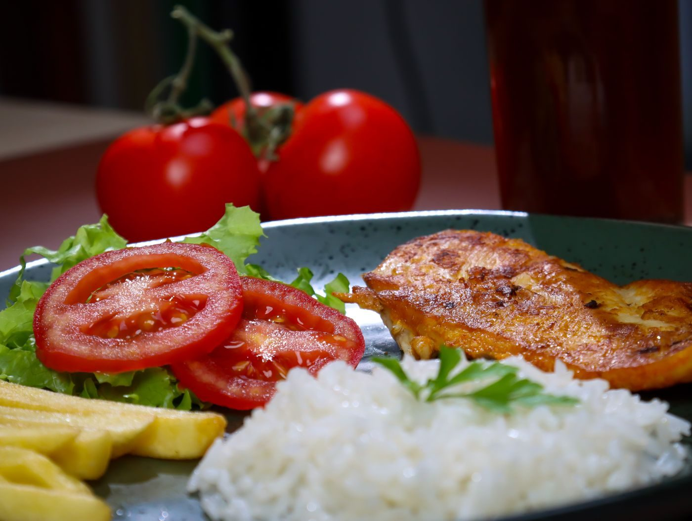

Confused on what to eat?
This page explains diet plans and gives an example day.

This page explains diet plans and gives an example day.
A diet plan is a personalised day of eating that decides when and how you eat. It only works if you stay consistent, so pick the one you can actually keep up. These are the three plans I will talk about.

The plan is quite simple. You generally skip breakfast and eat 1 really big meal, like a big plate of rice, chicken and anything else that will fill your stomach as much as you can. It’s quite easy to do, but that one meal needs to keep you full for the rest of the day and needs protein, carbs (carbohydrates) and calories to get through to the rest of the day.

You eat within a time window in the day. For example, you eat between 16:00 and 22:00, then you fast from 22:00 until 16:00 the next day. The time decides when you eat, not what you eat, so you can still enjoy normal healthy meals. Good if you like structuring your day.

You weigh your food and log it in an app to hit a daily calorie target. You can also weigh yourself every week to see if the calories you are eating are too high or too low, so you know if you are gaining or losing weight. It takes more effort than the other 2 meal plans, but it is a much more accurate way to lose fat or build muscle.
One thing to mention is that you want to completely eliminate snacking and junk food. They are mostly empty calories, which don’t really fuel you and don’t keep you full.
My favourite way to eat is generally calorie tracking. When you do it enough times, it becomes a part of your life and you can generally control whether you want to lose weight or gain weight.

Scrambled eggs with garlic powder. Quick and cheap to make, very high in protein and very tasty as well.

Rice with spinach and chicken, topped with paprika. You eat rice for carbs because carbs are energy, chicken for protein for recovery and greens for general health.

Grilled chicken with rice, fresh tomatoes, salad and some potatoes on the side. If you don’t like to eat the same meal for lunch and dinner, you could also make salmon with sweet potato and broccoli.